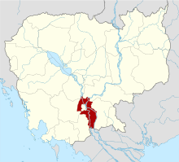
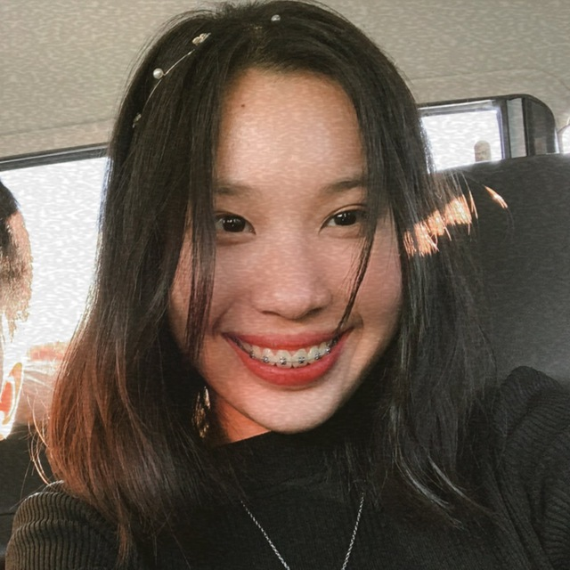
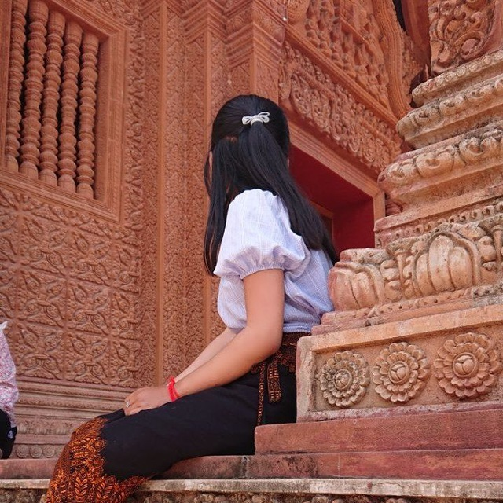
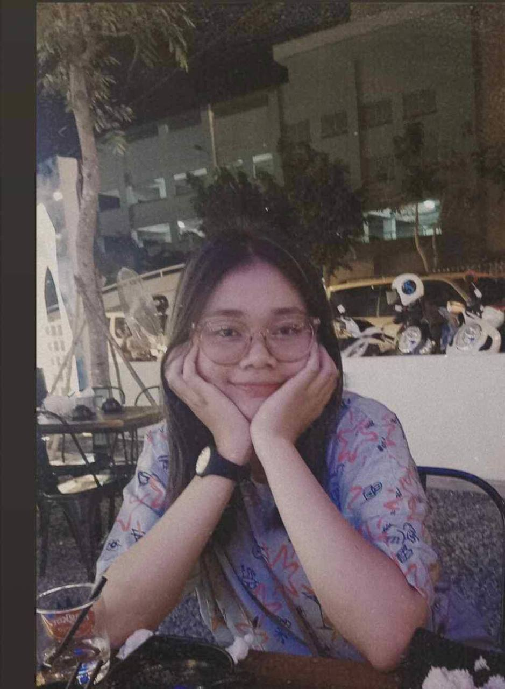

Sunday-Funday
This event is held every Sunday at the end of the month. We held this event until today since it work really well. We accept every type of donation everyday until the end of the month, we will ask the donators to come with us, visiting pagodas and feed those strays. The purpose is to making sure that all the donated money is benefited to the animal Plus, the donators will experience the feeling to feed animal and see their current condition. Apart from going to pagoda we also use the fund to support other animal in our shelter.

1 dollar 1 life
This events was held since the beginning of out Paws family. We creat this event to promote our welfare as well as to maintaing our situation at the moment. At the time, this campaign was not really succeed because not many people know our welfare and believe in us. But after our second launced of this events people started to know us until now. And we already launched this events 3 times already each year of our anniversary of our welfare.

Kandal Campaing
We are planning to launch a campaing at 2 places in Kandal province at the end of this year. Our purpose to Kandal province is to implement the knowledge of animal welfare and vaccinated them. First place is at a district called Ang Snoul and another one will be held at Ponhea Leue district. At both place we will help our campaign in 2 pagodas since, we thought that only the pagoda would open to public. Additionally, we think only going to the acual place like this that we could educate them to stop trading those animal and serve them as food. If they don't provide home or feed them but at least they shouldn't hate, kill or cursed it. Hope to see y'all engage with us in our campaign to Kandal province next month. For more information Contact us.
Meet our team

Julie Lou
Position : Manager
Since starting this team, I really appreciate our passionate memebers who dedicate their time and
strenght to run our team. Thanks to them we had run our team since nothing to something. Really
pleased with their presence in our team.

Hongnida Lorn
Position : Finace
I am the third person to enter the team after Julie and Socheata. At first I have no tension to be
a member because I cannot clear my time for them. But when I start working with them I can feel the passion
and commitment of them.
 Socheata Pheng
Socheata Pheng
Position : Developer
Even though my position sounds like an IT person but I am not really involve in it.
Starting this group I work as a developer to develop new idea to maintain our team, develop new mission
and social interaction. Plus, I also work as a staff in our Paws family. I love involving with animals.
Fun Fact : I had lots of pet like dog, cats, fishes and even rabbits.

Sovanrothnan Ham
Position : Vet
I started my journey with the team since the beginning because Nida and Socheata are my friend. I really love
this team since we can get along and work really well. Even though we had individauls position but we often helps
each other works. I really love being involve as a member.
GET IN TOUCH

To contact us about our services or to adopt one of our rescues, please don't
hesitate to contact
us on any of the details below or through our contact form.
We will get back to you ASAP
if contacting us by email.
CONTACT INFO
Phnom Penh: 078 611 289
Kampot: 092 888 169
info@ppaws.com
CONNECT WITH US